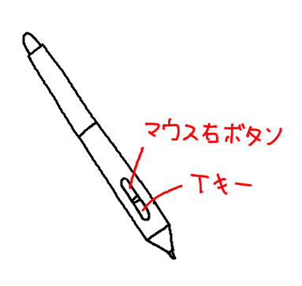

0.ワコムドライバー設定
0.ワコムドライバー設定1.ツールの使い方
2.ペンオプション
3.メニューボタン
4.カラーヒストリー
5.リプレイモード
6.アプリ初期化
7.Lassoツール使い方
8.キャンバスサイズの変更
説明は一番重要な順番で並びました。
ワコムドライバー設定のマッピングの「デジタルイング機能を使う」のチェックを外してください。 これをしないと線を描くのが少し変になります。
ワコム以外のタブレットにはテストしてないので、正常な作動を保証できません。
もし、マウス右ボタンを使いたくない場合 ２番目の場合を読んでください。
まず、タブレットのペンのボタンの設定を上の画像のようにしてください。
 マウス右ボタンを押すとツールメニューが現れ、右ボタンを外すと消えます。
マウス右ボタンを押すとツールメニューが現れ、右ボタンを外すと消えます。
ツールメニューは暗いボタンと明るいボタンで分かれています。 暗いボタンはマウス左クリックを押したまま、Dragするとツールによってズームしたり、キャンバスが回転したりします。
ズームボタンはクリックした位置を中心にして、拡大/縮小がされるので、ズームしたい位置でカーソルを移動して使いましょう。ツールメニューはカーソルを沿います。
もし、何のツールを選択してない状態でツールメニューを消したい場合はこの暗いボタンにカーソルを位置してマウス右ボタンを外してください。 明るいボタンを選択するにはカーソルを選択したいアイコンに位置してマウス右ボタンを外してください。
明るいボタンをなんでもクリックしたままDragするとキャンバスを移動することができます。
右下に点アイコンを、Click+Dragするとツールメニューのサイズが調節できます。
ペンツールと消しゴムアイコンは代わる代わるＯＮします。ペンアイコン上の小さな直線アイコンは直線ツールアイコンです。
消しゴムツール選択すると、直線ツールは「消しゴム直線ツール」になります。 Lassoを使った場合このツールメニューと似ているメニューが現れますが、使い方が少し変わるので、これを参考してください。 下の動画はツールメニューの使い方です。マウスのボタン操作を気を付けながら見てください。 マウス右ボタンを使いたくない場合, このアプリの上のTool-box ON/OFF ボタンをクリックすると、ツールメニューが現れます。
マウス右ボタンを使いたくない場合, このアプリの上のTool-box ON/OFF ボタンをクリックすると、ツールメニューが現れます。
これをONにしたらマウス右ボタンを使うことができません。
基本的に普通のクリックでツールを選択できます。
ただし移動ツール(Move tool)と キャンバス回転ツール(Rotate canvas)の操作は Click+Dragです。
キャンバス移動は明るいアイコンをなんでもクリックして、Dragしてください。
ツールメニュー上の小さい突起をClick+Dragするとツールメニューを移動することができます。
 ショートカットキーの配置です。緑色は右利き用、青色は左利き用です。
ショートカットキーの配置です。緑色は右利き用、青色は左利き用です。
基本的にキーを押せばONで、外せばOFFです。
A,Z,X (K,M,comma)キーは普通に押しても作動します。
ペンサイズ調節キー(Q,Iキー)は ペン、直線、消しゴムツールの サイズ,透明度を速く変更できます。 Q(I)キーを 押したまま, マウス左クリックしたまま, 左右にDragするとペンサイズを変更し, 上下のDragすると透明度を変更できます。
Q+D(I+H)キーを押したまま上の説明と同じくDragすると消しゴムのサイズと透明度を変更します。
Shift+D(Shift+H)キーは直線＋消しゴムになります。
Shift+D+Q(Shift+H+Q)キーは Q+D(I+H)キーと同じです。上と同じ方法で直線消しゴムのサイズと透明度を変更します。
ショートカットキーが作動してない場合はキーボードの言語が英語になっているのかチェックしてください。
 ペン(消しゴム,直線ツール)の かたち, サイズ, 透明度, 色を変更させるボックスです。
ペン(消しゴム,直線ツール)の かたち, サイズ, 透明度, 色を変更させるボックスです。
ボックスの空いた部分をClick+Dragするとボックスを移動し、右下の点アイコンはボックスのサイズを変更します。 「14px」と書いてある部分はサイズを意味します。このボックスの右側部分をクリックするとサイズ増加,左側部分はサイズ減少です。
「100%」と書いてある部分は透明度です。調整方法は上の説明と同じです。
この２つのボックスはClick+Drag(左右または上下)すると速く数値を変わることができます。
消しゴムとペンのサイズ、透明度データは別に分かれています。
青い円は ペン(直線,消しゴム)のかたち変更アイコンです。クリックするたび, 円形、四角形に変更します。
その下にあるアイコンをクリックすると色選択（Color Picker)窓が現れます。
Color Picker窓下には drawrのカラープリセットがあります。 左下には選択した色と元の色を表示する２つのボックスがあります。右の元の色ボックスをクリックすると色変更を初期化することができます。
Color Picker窓を閉じる方法は, 窓以外をクリックまたは,マウス右ボタンを押してください。
下の動画はペンオプションの使い方です。
アプリの上にある白い四角ボタンのことです。
もし、新しく保存したい場合はこのボタンを長くクリックしたください。
*.pngファイルと *.2020ファイル, ２つのファイルがセーブされます。 *.2020ファイルは背景が透明の元のイメージデータと,筆跡再生データを含まれています。なので、普通は*.2020ファイルを読み込んで作業することがおすすめです。
めったにありえないケースですが、ほかのアプリが保存したファイルを使っているとき、セーブボタンを押してもセーブができない場合があります。その時はファイルの名前を変えてセーブしてみましょう。
アプリで支援する最大イメージサイズは 2000x2000で,もし読み込むイメージがこのサイズを超えた場合強制リサイズさせます。
ショートカットキーは Ctrl+Oです。
ショートカットキー ESCを 3回押しても同じです。
消しゴムツールの色が背景色と同じく設定します。
このボタンを Click+Dragしてキャンバス内部色やカラーヒストリーの色に背景色にすることもできます。
下の動画は背景色の変更ボタンの使い方です。

窓の下の Used memoryはキャンバスのサイズが広いほど複雑なイメージを描くほど増加します。
Cached imageは リプレイモードでフレーム探索の性能を高めるために作っイメージデータの総サイズです。長い時間描くほど、サイズが大きくなります。
もし、新しいバージョンがある場合もこのアプリ情報窓が出てきます。

今までの筆跡データを消します。特定フレームのイメージから筆跡を記録します。
しかし、リプレイモードはすべての過程が含まれているので、特定地点にUndoして書くことができます。
フレーム探索で描きなおしたいイメージを選択して、このボタンを2回押してください。
このボタンは普通Undoできるフレームでは現れません。
フレーム探索バーに灰色の区分線があります。その線より小さいフレームだけ、このボタンが現れます。
ファイル名+現在フレーム番号.png 形式で保存します。
 アプリの窓下の色たちのことです。
アプリの窓下の色たちのことです。
使った色を30個まで記録します。Eye-dropperで選択した色は記録しません。
背景色変更ボタンをClick+Dragしてこの色たちを背景色に使えます。 ここを参考してください。
自分が書いた絵の全過程を観ることができるモードです。途中のイメージで書き直すこともできますし、*.2020ファイルでセーブと読み込むこともできます。
リプレイモードのメニューボタンの説明はここです。
フレーム探索バーを利用して、普通の動画のように筆跡を途中から再生することができます。 しかしスーパーUndo(Super undo)など機能を使う時、探索バーでは自分が望んだフレームやイメージを選択することは難しいです。
その時は, 探索バー左にある２つの Nextと Prevボタンを使いましょう。ストローク単位でフレーム探索することができます。
ショートカットキーは 左右の矢印キーです。 Shiftキーを押したままボタンを使うと 1フレーム単位で探索することができます。 以前のフレームを探索するときはイメージを最初から描き直すため、探索性能が遅くなるでしょう。
リプレイモードもツールメニューがあります。マウス右ボタンでON/OFFしたり, Tool-box ON/OFFボタンを押してください。
キャンバスズーム, 回転, 再生速度の変更, カーソルを沿うキャンバス移動。 この４つのボタンがあります。 Click+Dragが基本操作です。カーソルを沿うキャンバス移（Follow replay-cursor)ボタンはDragする必要がありません。
キャンバスをClick+Dragをするとキャンバスを移動させます。
再生速度変更でかっこのなかの数値は総再生時間を意味します。 例えば x43［12.6 min］は 43倍速で再生したら、総再生時間が12.6分という意味です。
再生速度が速くなるほどCPU負荷が増加します。 Follow replay-cursorボタンをONにすると カーソルがアプリの窓の外に移動したとき、自動的にキャンバスを移動させて今描く位置を見せる機能です。
ショートカットキー Enterで 再生/停止します。
上/下 矢印キーで再生速度を調節します。
基本的にこのアプリは起動するたび、最後に閉じた時の状態を復元します。
アプリがエラーをおこしたり、完全に初期化状態に戻したい時は
Shiftキーを押したままアプリを閉じると、初期化されます。
筆跡データと最後に書いた絵などのすべてのデータが消されます。 もしこのアプリを終了する前に、パソコンを終了したり再起動すると、
データが保存されないので、先にアプリを終了して、パソコンを終了してください。
Lassoツールボタンを選択して、キャンバスに調節したい領域を描きます。
で、Lassoツールメニューがカーソルがに現れます。
Mirrorボタンは普通クリック, ほかのボタンはClick+Dragでイメージを調節します。
マウス右クリックでツールメニューを使うこともできます。
ショートカットキーEnterとESCキーでOKとCancelすることができます。
下の動画を参考してください。
マウス右ボタンで灰色のキャンバスの枠をクリックすると青色に色が変わります。
その状態でClick+Dragしてください。
キャンバス外に出たイメージデータは消されます。
最大サイズは 2000x2000ピクセルです。
ショートカットキーCtrlキーを押したままキャンバスの枠をClick+Dragしてもサイズは調節できます。
下の動画を参考してください。
ワコムドライバー設定
ワコムドライバー設定のマッピングの「デジタルイング機能を使う」のチェックを外してください。 これをしないと線を描くのが少し変になります。
ワコム以外のタブレットにはテストしてないので、正常な作動を保証できません。
ツールの使い方
1.マウスの右ボタンを使って選択
 このアプリの基本設定です。ショートカットキーを使わず、片手で速く操作できるように考案した方法です。もし、マウス右ボタンを使いたくない場合 ２番目の場合を読んでください。
まず、タブレットのペンのボタンの設定を上の画像のようにしてください。
マウス右ボタンを押すとツールメニューが現れ、右ボタンを外すと消えます。ツールメニューは暗いボタンと明るいボタンで分かれています。 暗いボタンはマウス左クリックを押したまま、Dragするとツールによってズームしたり、キャンバスが回転したりします。
ズームボタンはクリックした位置を中心にして、拡大/縮小がされるので、ズームしたい位置でカーソルを移動して使いましょう。ツールメニューはカーソルを沿います。
もし、何のツールを選択してない状態でツールメニューを消したい場合はこの暗いボタンにカーソルを位置してマウス右ボタンを外してください。 明るいボタンを選択するにはカーソルを選択したいアイコンに位置してマウス右ボタンを外してください。
明るいボタンをなんでもクリックしたままDragするとキャンバスを移動することができます。
右下に点アイコンを、Click+Dragするとツールメニューのサイズが調節できます。
ペンツールと消しゴムアイコンは代わる代わるＯＮします。ペンアイコン上の小さな直線アイコンは直線ツールアイコンです。
消しゴムツール選択すると、直線ツールは「消しゴム直線ツール」になります。 Lassoを使った場合このツールメニューと似ているメニューが現れますが、使い方が少し変わるので、これを参考してください。 下の動画はツールメニューの使い方です。マウスのボタン操作を気を付けながら見てください。
2.マウス右ボタンを使わずツール選択
マウス右ボタンを使いたくない場合, このアプリの上のTool-box ON/OFF ボタンをクリックすると、ツールメニューが現れます。これをONにしたらマウス右ボタンを使うことができません。
基本的に普通のクリックでツールを選択できます。
ただし移動ツール(Move tool)と キャンバス回転ツール(Rotate canvas)の操作は Click+Dragです。
キャンバス移動は明るいアイコンをなんでもクリックして、Dragしてください。
ツールメニュー上の小さい突起をClick+Dragするとツールメニューを移動することができます。
3.ショートカットキーを使ってツール選択
ショートカットキーの配置です。緑色は右利き用、青色は左利き用です。基本的にキーを押せばONで、外せばOFFです。
A,Z,X (K,M,comma)キーは普通に押しても作動します。
ペンサイズ調節キー(Q,Iキー)は ペン、直線、消しゴムツールの サイズ,透明度を速く変更できます。 Q(I)キーを 押したまま, マウス左クリックしたまま, 左右にDragするとペンサイズを変更し, 上下のDragすると透明度を変更できます。
Q+D(I+H)キーを押したまま上の説明と同じくDragすると消しゴムのサイズと透明度を変更します。
Shift+D(Shift+H)キーは直線＋消しゴムになります。
Shift+D+Q(Shift+H+Q)キーは Q+D(I+H)キーと同じです。上と同じ方法で直線消しゴムのサイズと透明度を変更します。
ショートカットキーが作動してない場合はキーボードの言語が英語になっているのかチェックしてください。
ペンオプション
ペン(消しゴム,直線ツール)の かたち, サイズ, 透明度, 色を変更させるボックスです。ボックスの空いた部分をClick+Dragするとボックスを移動し、右下の点アイコンはボックスのサイズを変更します。 「14px」と書いてある部分はサイズを意味します。このボックスの右側部分をクリックするとサイズ増加,左側部分はサイズ減少です。
「100%」と書いてある部分は透明度です。調整方法は上の説明と同じです。
この２つのボックスはClick+Drag(左右または上下)すると速く数値を変わることができます。
消しゴムとペンのサイズ、透明度データは別に分かれています。
青い円は ペン(直線,消しゴム)のかたち変更アイコンです。クリックするたび, 円形、四角形に変更します。
その下にあるアイコンをクリックすると色選択（Color Picker)窓が現れます。
Color Picker窓下には drawrのカラープリセットがあります。 左下には選択した色と元の色を表示する２つのボックスがあります。右の元の色ボックスをクリックすると色変更を初期化することができます。
Color Picker窓を閉じる方法は, 窓以外をクリックまたは,マウス右ボタンを押してください。
下の動画はペンオプションの使い方です。
メニューボタン
アプリの上にある白い四角ボタンのことです。
セーブボタン
画像を保存するボタンです。最初だけファイルの経路と名前を確認します。後は自動的に同じファイルに書き込みます。もし、新しく保存したい場合はこのボタンを長くクリックしたください。
*.pngファイルと *.2020ファイル, ２つのファイルがセーブされます。 *.2020ファイルは背景が透明の元のイメージデータと,筆跡再生データを含まれています。なので、普通は*.2020ファイルを読み込んで作業することがおすすめです。
めったにありえないケースですが、ほかのアプリが保存したファイルを使っているとき、セーブボタンを押してもセーブができない場合があります。その時はファイルの名前を変えてセーブしてみましょう。
ショートカットキーは Ctrl+Sで, Save Asは Shift+Ctrl+Sです。
読み込みボタン
ファイル読み込みは *.2020 ファイルとともに, *.png, *.gif, *.jpgを読み込むことができます。ファイルアイコンをアプリ窓にDragして読み込むこともできます。アプリで支援する最大イメージサイズは 2000x2000で,もし読み込むイメージがこのサイズを超えた場合強制リサイズさせます。
ショートカットキーは Ctrl+Oです。
データの消去
このボタンを３回押すと, 筆跡データと描いたイメージを消します。ショートカットキー ESCを 3回押しても同じです。
背景色変更ボタン
キャンバス自体の背景色を変更します。消しゴムツールの色が背景色と同じく設定します。
このボタンを Click+Dragしてキャンバス内部色やカラーヒストリーの色に背景色にすることもできます。
下の動画は背景色の変更ボタンの使い方です。
ツールメニューON/OFFボタン
ツールメニューON/OFFします。詳しい説明はここです。アプリの情報ボタン
アプリを実行時間,私のTwitterとE-Mail, 言語別の説明書がリンクされています。窓の下の Used memoryはキャンバスのサイズが広いほど複雑なイメージを描くほど増加します。
Cached imageは リプレイモードでフレーム探索の性能を高めるために作っイメージデータの総サイズです。長い時間描くほど、サイズが大きくなります。
もし、新しいバージョンがある場合もこのアプリ情報窓が出てきます。
リプレイモードボタン
筆跡再生モードに変更します。このモードの説明は ここです。再録画ボタン
筆跡再生モードで特定のイメージから最初から記録したい場合はこのボタンを２回押したください。今までの筆跡データを消します。特定フレームのイメージから筆跡を記録します。
スーパーUndoボタン
普通Draw Modeでは７回までundoできます。しかし、リプレイモードはすべての過程が含まれているので、特定地点にUndoして書くことができます。
フレーム探索で描きなおしたいイメージを選択して、このボタンを2回押してください。
このボタンは普通Undoできるフレームでは現れません。
フレーム探索バーに灰色の区分線があります。その線より小さいフレームだけ、このボタンが現れます。
イメージキャプチャーボタン
特定フレームのイメージを保存したい時,このボタンを押してください。ファイル名+現在フレーム番号.png 形式で保存します。
ドローモードボタン
普通のお絵かきモードに戻ります。カラーヒストリー
アプリの窓下の色たちのことです。使った色を30個まで記録します。Eye-dropperで選択した色は記録しません。
背景色変更ボタンをClick+Dragしてこの色たちを背景色に使えます。 ここを参考してください。
リプレイモード
自分が書いた絵の全過程を観ることができるモードです。途中のイメージで書き直すこともできますし、*.2020ファイルでセーブと読み込むこともできます。
リプレイモードのメニューボタンの説明はここです。
フレーム探索バーを利用して、普通の動画のように筆跡を途中から再生することができます。 しかしスーパーUndo(Super undo)など機能を使う時、探索バーでは自分が望んだフレームやイメージを選択することは難しいです。
その時は, 探索バー左にある２つの Nextと Prevボタンを使いましょう。ストローク単位でフレーム探索することができます。
ショートカットキーは 左右の矢印キーです。 Shiftキーを押したままボタンを使うと 1フレーム単位で探索することができます。 以前のフレームを探索するときはイメージを最初から描き直すため、探索性能が遅くなるでしょう。
リプレイモードもツールメニューがあります。マウス右ボタンでON/OFFしたり, Tool-box ON/OFFボタン
を押してください。キャンバスズーム, 回転, 再生速度の変更, カーソルを沿うキャンバス移動。 この４つのボタンがあります。 Click+Dragが基本操作です。カーソルを沿うキャンバス移（Follow replay-cursor)ボタンはDragする必要がありません。
キャンバスをClick+Dragをするとキャンバスを移動させます。
再生速度変更でかっこのなかの数値は総再生時間を意味します。 例えば x43［12.6 min］は 43倍速で再生したら、総再生時間が12.6分という意味です。
再生速度が速くなるほどCPU負荷が増加します。 Follow replay-cursorボタンをONにすると カーソルがアプリの窓の外に移動したとき、自動的にキャンバスを移動させて今描く位置を見せる機能です。
ショートカットキー Enterで 再生/停止します。
上/下 矢印キーで再生速度を調節します。
アプリ初期化
基本的にこのアプリは起動するたび、最後に閉じた時の状態を復元します。
アプリがエラーをおこしたり、完全に初期化状態に戻したい時は
Shiftキーを押したままアプリを閉じると、初期化されます。
筆跡データと最後に書いた絵などのすべてのデータが消されます。 もしこのアプリを終了する前に、パソコンを終了したり再起動すると、
データが保存されないので、先にアプリを終了して、パソコンを終了してください。
Lassoツール使い方
Lassoツールボタンを選択して、キャンバスに調節したい領域を描きます。
で、Lassoツールメニューがカーソルがに現れます。
Mirrorボタンは普通クリック, ほかのボタンはClick+Dragでイメージを調節します。
マウス右クリックでツールメニューを使うこともできます。
ショートカットキーEnterとESCキーでOKとCancelすることができます。
下の動画を参考してください。
キャンバスサイズの変更
マウス右ボタンで灰色のキャンバスの枠をクリックすると青色に色が変わります。
その状態でClick+Dragしてください。
キャンバス外に出たイメージデータは消されます。
最大サイズは 2000x2000ピクセルです。
ショートカットキーCtrlキーを押したままキャンバスの枠をClick+Dragしてもサイズは調節できます。
下の動画を参考してください。